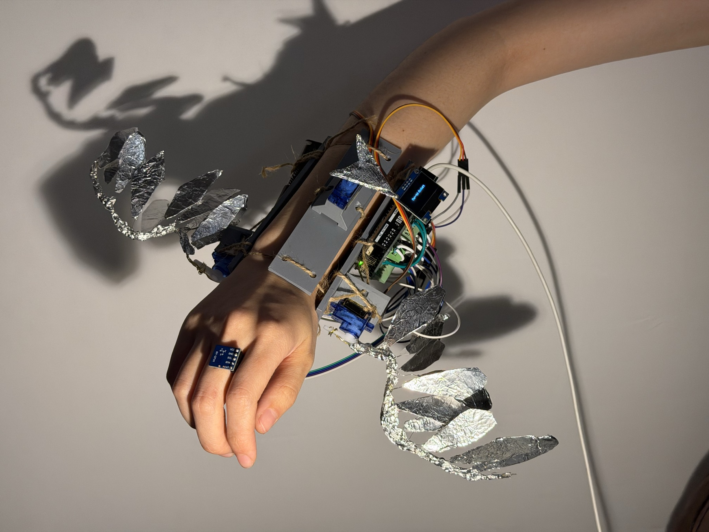
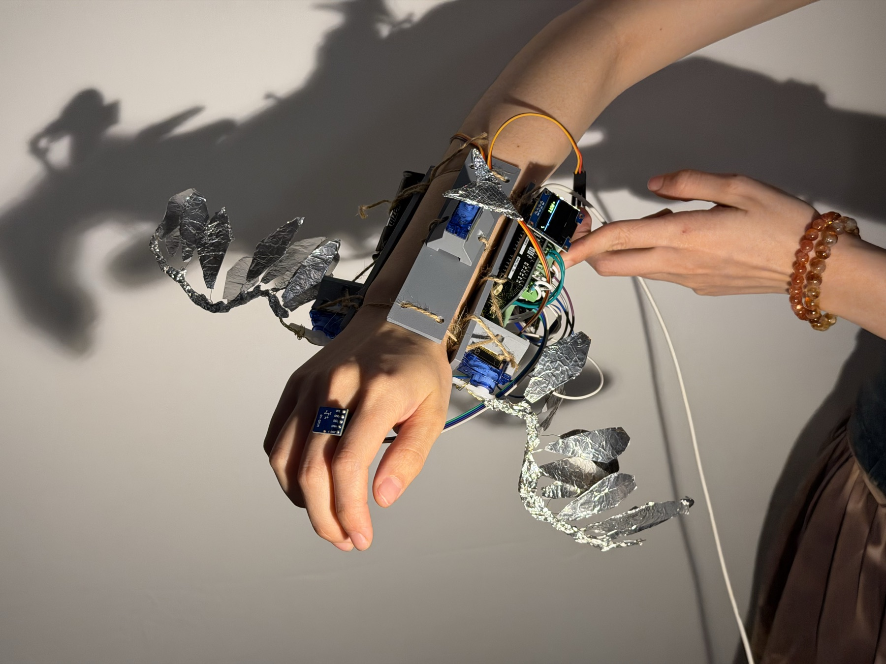
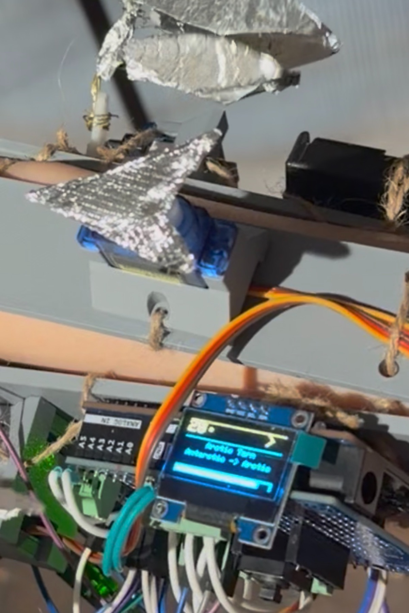
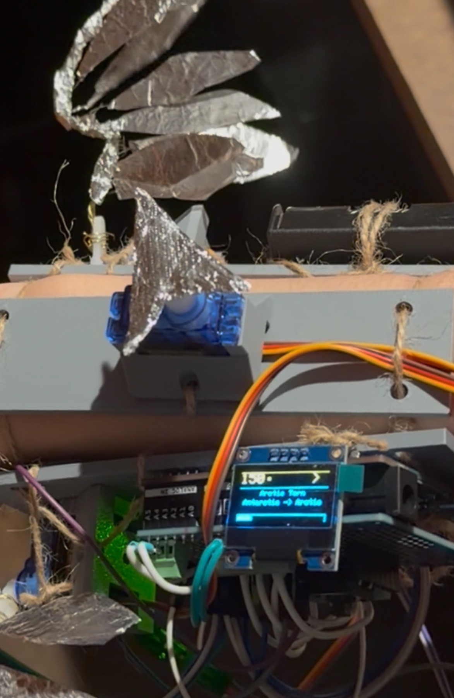
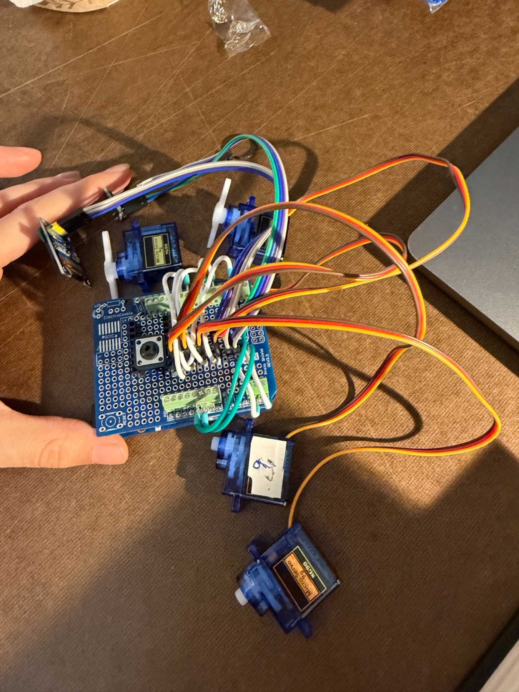
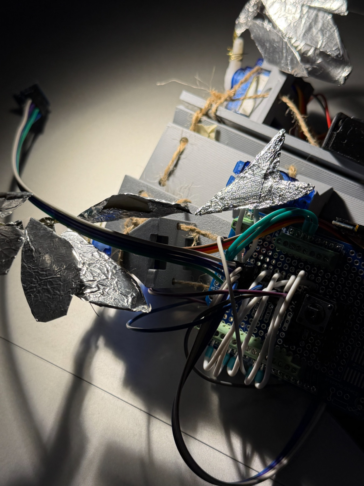

Statement
Migratory birds can sense the Earth's magnetic field to find their way, a sense called magnetoreception that humans don't have. This project was my first time experimenting with Arduino: a wearable that reads a compass and flaps a foil wing wider when you face along a bird's migration route. Wearing it gives you a small, physical feel for direction, and a playful idea of what it might be like to borrow a sense from another species.





